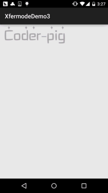

一、本节引言：
好的，上一节中，我们又写了一个关于Xfermode图片混排的例子——擦美女衣服的Demo，加上前面的 利用Xfermode来实现圆角或圆形ImageView，相信大家对Xfermode已经不再像以前那么陌生了，或者 说有点熟悉了，嗯，本节我们来写Xfermode的最后一个例子，通过Xfermode的ProterDuff.SRC_IN 模式来实现文字加载的效果！还是得贴下ProterDuff的模式图：

本节例子参考自：Android Paint之 setXfermode PorterDuffXfermode 讲解 嗯，话不多说，开始本节内容~
二、要实现的效果图以及实现流程分析：
要实现的效果图：

实现流程分析：
Step 1.首先，一个文字图片(透明背景)
Step 2.初始化画笔，背景图片(DST)，矩形Rect(SRC)
Step 3.先保存图层，接着先绘制背景图，设置混排模式，然后绘制Rect，清除混排模式 接着回复保存的图层，最后修改下Rect区域高度，调用invalidate()让View重绘！
如果流程分析有点不懂，直接看代码，超简单~
三、代码实现：
首先是屏幕工具类，ScreenUtil.java，这里就不贴了，之前的几节中有贴过！ 然后是我们的自定义View类：LoadTextView.java：
/**
* Created by Jay on 2015/10/26 0026.
*/
public class LoadTextView extends View {
private PorterDuffXfermode mXfermode = new PorterDuffXfermode(PorterDuff.Mode.SRC_IN);
private Bitmap backBitmap;
private Paint mPaint;
private int mBitW, mBitH;
private int mCurW, mCurH, mCurTop;
private Rect mDynamicRect;
public LoadTextView(Context context) {
this(context, null);
}
public LoadTextView(Context context, AttributeSet attrs) {
super(context, attrs);
mCurW = ScreenUtil.getScreenW(context);
mCurH = ScreenUtil.getScreenH(context);
init();
}
public LoadTextView(Context context, AttributeSet attrs, int defStyleAttr) {
super(context, attrs, defStyleAttr);
}
private void init() {
//画笔初始化：
mPaint = new Paint(Paint.ANTI_ALIAS_FLAG);
mPaint.setFilterBitmap(true);
mPaint.setDither(true);
mPaint.setColor(Color.RED);
//背部图片的初始化
backBitmap = BitmapFactory.decodeResource(getResources(), R.mipmap.img_string);
mBitH = backBitmap.getHeight();
mBitW = backBitmap.getWidth();
//设置当前的高度
mCurTop = mBitH;
mDynamicRect = new Rect(0, mBitH, mBitW, mBitH); //初始化原图
}
@Override
protected void onDraw(Canvas canvas) {
super.onDraw(canvas);
int saveLayerCount = canvas.saveLayer(0, 0, mCurW, mCurH, mPaint, Canvas.ALL_SAVE_FLAG);
canvas.drawBitmap(backBitmap, 0, 0, mPaint);// 绘制目标图
mPaint.setXfermode(mXfermode); //设置混排模式
canvas.drawRect(mDynamicRect, mPaint); //绘制源图
mPaint.setXfermode(null); //清除混排模式
canvas.restoreToCount(saveLayerCount); //恢复保存的图层
// 改变Rect区域，假如
mCurTop -= 2;
if (mCurTop <= 0) {
mCurTop = mBitH;
}
mDynamicRect.top = mCurTop;
invalidate(); //重绘
}
}
嗯，没有了，就上面这么点代码，就实现了如图所示的效果，是不是很简单咧~
要coder-pig字体的图片么，贴下~
四、本节代码示例下载：
五、本节小结：
好的，本节我们又用PorterDuff的SRC_IN模式来写一个文字加载的效果，加上前面的： DST_IN模式实现圆形和圆角ImageView，以及DST_OUT模式来实现擦掉美女衣服，相信 大家对Xfermode的使用已经有眉目了，当然这些例子都是没有太大意义的，实际开发根本不会 用到，不过很便于大家理解~就好像练功夫，师傅领进门，修行靠自身！基础教程只是一个引导 而已，要真正掌握并学以致用还需靠你们自己，多阅读别人的优秀的代码，以及多动手！ 好的，就说这么多，谢谢~